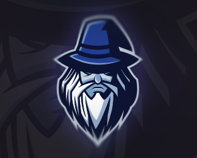

Toggle navigation
Anzbot
Home
(current)

Anzbot
A discord bot created by
Spike
About
Anzbot was at first a bot created for the streaming service
Twitch
but was now created as a Discord bot by
Spike
Features
Anzbot currently has the following features: A few commands(such as !cat,!dog) and a Music System.
How do I get it?
At this time Anzbot is a private bot.
Copyright © 2017
Anzbot
Created with
by
Spike
Anzbot currently running on:
v1.2
×
Anzbot Changelog
Anzbot v1.2
+ Added !snoop(translate anything the snoop dog way)
+ Added !twitch(usage: !twitch channelname)
+ Rewrote command system
— Anzbot Team